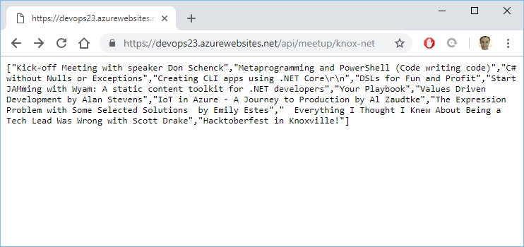
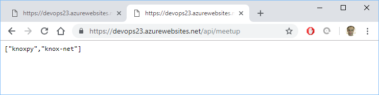

Testing
with
ASP.NET Core
Why should we test code?
Why should we write testable code?
So we don't end up with 1600 line Winform button clicks.

It happens all the time.
Office layout for software department at my first job out of college.

This was typical.
Private Sub btnOrderCreate_Click(sender As object, e As EventArgs) Handles btnOrderCreate.Click
...
If ExecuteSQLInt("SELECT FeatureFlag1 FROM AR_MASTER WHERE AR_ACCT_ID = " + txtBoxAcct1.Text) = 1
And ExecuteSql("UPDATE HR_User Set LastAction = GETDATE() WHERE User_ID = " + txtBoxRep.Text)
And ExecuteSqlString("SELECT PIN FROM HR_USER WHERE User_ID = " + txtBoxRepId.Text) = inputRepPass.Value
Then
...
' Create Order
ElseIf something or other Then
...
Else
...
End If
...
End SubThis happened over 12 years.
Testing this code was a very manual, tedious, and inprecise process.
I haven't listed the other 20,000 lines in this one file.

Did I mention there are hundreds of forms?
The code was too complicated and no separation of concerns made unit tests near impossible.
- The "Business logic" shouldn't be completely dependent on the GUI.
- The "Business logic" should probably be a little clearer on how and why it's calling the database.
Dependency Inversion Principle
High-level modules should not depend on low-level modules. Both should depend on abstractions.
Abstractions should not depend on details. Details should depend on abstractions.
Now might be a good time to spoil the ending to the concepts here.
Dependency injection by adding ASP.NET Core Services.
// This method gets called by the runtime. Use this method to add services to the container.
public void ConfigureServices(IServiceCollection services)
{
services.AddMvc().SetCompatibilityVersion(CompatibilityVersion.Version_2_1);
services.AddSingleton<ICacheResults, InMemoryCache>();
}One day I walked into work after a late night deployment of a major software update...

A LOT of work had been done in this file, and we knew something was breaking in this 3000 line button click based on pictures from the client.
Private Sub btnOrderCreate_Click(sender As object, e As EventArgs) Handles btnOrderCreate.Click
...
If ExecuteSQLInt("SELECT FeatureFlag1 FROM AR_MASTER WHERE AR_ACCT_ID = " + txtBoxAcct1.Text) = 1
And ExecuteSql("UPDATE HR_User Set LastAction = GETDATE() WHERE User_ID = " + txtBoxRep.Text)
And ExecuteSqlString("SELECT PIN FROM HR_USER WHERE User_ID = " + txtBoxRepId.Text) = inputRepPass.Value
Then
...
' Create Order
ElseIf something or other Then
...
Else
...
End If
...
End SubWhen a client can't take orders, that's the most important problem.
- The client gets angry.
- Your employer looks bad.
- You better be confident in any proposed fix you bring
to your boss, for them to bring to the client. - How can you even diagnose the problem with no information on their setup?
How can I find the problem?
I need to run the code by stepping through the code and debugging it and guessing.
Is it safe to run the code?
- Can I be sure that real services won't accidentally be called?
- Can I isolate and dismiss chunks of code?
The same skills you use to debug software, is the same skills you use to refactor code to write tests for the code.

Enough of my problems for a bit, here's the software I want to write tests for.

// GET api/meetup
[HttpGet()]
public IEnumerable<string> Get()
{
return this.searchRankings.GetRecentSearchResults();
}// GET api/meetup/knox-net
[HttpGet("{name}")]
public async Task<IEnumerable<string>> Get(string name)
{
if(string.IsNullOrWhiteSpace(name)) {
return new string[0];
}
this.searchRankings.AddRecentSearch(name);
HttpResponseMessage response = await httpClient.GetAsync($"{name}/events?key={this.meetupApiKey}&status=past");
var events = await response.Content.ReadAsAsync<List<MeetupEvent>>();
return events.Select(x => x.name);
}API Controller constructor
private readonly string meetupApiKey;
private readonly HttpClient httpClient;
private readonly ICacheResults searchRankings;
public MeetupController(IConfiguration configuration, ICacheResults searchRankings)
{
meetupApiKey = configuration.GetValue<string>("MEETUP_API_KEY");
httpClient = new HttpClient() {
BaseAddress = new Uri("https://api.meetup.com/")
};
httpClient.DefaultRequestHeaders.Accept.Clear();
httpClient.DefaultRequestHeaders.Accept.Add(new MediaTypeWithQualityHeaderValue("application/json"));
this.searchRankings = searchRankings;
}https://dev.azure.com/knoxdevops/knoxdevops
The problems with testing this code.
- Any tests directly call the Meetup API.
- The data returned from the API changes over time.
- This API is Meetup Production, what if I'm making changes to events with a PUT or POST?
- This code could be copy-pasted to elsewhere.
Note: I'm ignoring the argument whether API controllers should be tested, this depends on company and team.
Daniel Oliver
Microsoft MVP
Website: olivercoding.com
Twitter: @a_software_dev
Github: danieloliver
Slides: https://dotnet-testing-talk.olivercoding.com/